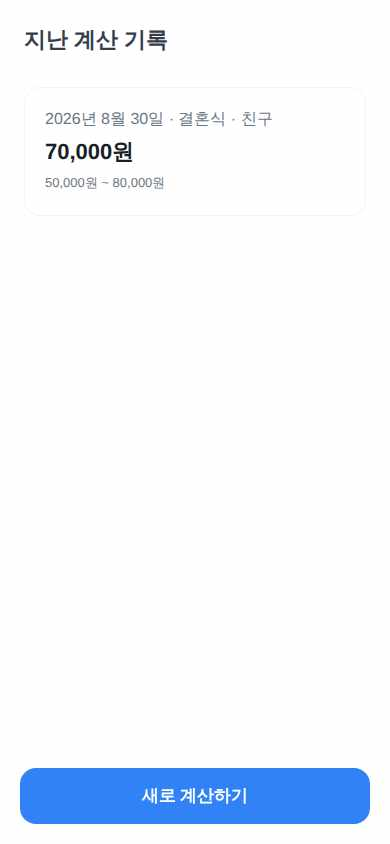

GiftMoneyCalc
가상 사용자 3명 중 0명 완주 · 2026-08-29 17:54
미완주27세 IT 스타트업 주니어 기획자. 회사 동료 결혼식 청첩장을 어제 받고 출근길 지하철에서 3분 안에 답을 얻고 싶어함. 스마트폰·토스 사용에 매우 익숙하지만 참을성이 낮아 온보딩 고지 다이얼로그를 바로 닫고, 설명 텍스트는 읽지 않고 기본값(친밀도 3, 참석)을 그대로 둔 채 최소 탭으로 결과만 확인한다. 축의금 관례를 잘 몰라 '얼마가 표준인지'만 알면 만족한다.
과업 홈에서 계산 시작 → 경조사 종류 '결혼식', 관계 '직장동료', 친밀도 3(기본), 지역 '서울 그 외', 참석 '참석', 예식장 '일반'을 선택하고 결과 화면에서 추천 금액과 적정 범위를 확인한다.

1 "결혼식" 탭 → 성공

7 최종 화면 — 판정: 미완주
심사: 추천 금액 50,000원은 일치하지만, 화면에 표시된 적정 범위는 '40,000원에서 70,000원'으로 기대값인 30,000원~70,000원과 다릅니다.
6스텝
미완주62세 은퇴 후 소규모 자영업을 하는 남성. 부고를 문자로 받고 조의금 액수를 신중히 정하고 싶어한다. 글씨를 키워 천천히 읽고, 계수 상세(친밀도·지역·불참) 내역을 하나씩 확인한 뒤 뒤로가기로 입력 화면에 돌아가 지역과 참석 여부를 여러 번 바꿔보며 비교한다. 스마트폰은 통화·문자·토스 송금 정도만 쓰는 저숙련 사용자로, 하단 고정 버튼처럼 큰 터치 타깃을 선호한다.
과업 장례식 조의금을 계산한다: 경조사 '장례식', 관계 '친구', 친밀도 4, 지역 '지방', 참석 '불참'으로 입력해 결과와 계수 상세 내역을 확인한다.

1 아래로 스크롤 → 성공

3 뒤로가기 → 성공

5 뒤로가기 → 성공

7 뒤로가기 → 성공

9 뒤로가기 → 성공

11 뒤로가기 → 성공

13 뒤로가기 → 성공

15 최종 화면 — 판정: 미완주
심사: 이미지가 완전히 빈 백색 화면으로, 추천 금액(50,000원), 범위(30,000원~70,000원), 계수 상세(친밀도 4단계 ×1.15, 지역 ×0.9, 불참 ×0.7) 등 어떤 요소도 보이지 않음. 사용자도 여러 번 스크롤/뒤로가기 시도 후 포기
- 🔴 [dead_end · 스텝 3] '어떤 자리인가요' 항목에 결혼식·돌잔치·생일·환갑칠순만 있고 목표인 '장례식'이 없음. 조의금이 아니라 축의금 계산기로 보임
- 🔴 [visual_bug · 스텝 4] 화면이 완전히 빈 흰 화면으로 표시되어 아무 내용도 보이지 않음
- 🔴 [visual_bug · 스텝 5] 화면이 완전히 빈 백지 상태로 표시됨. 계수 상세나 입력 화면 어느 것도 보이지 않음
- 🔴 [visual_bug · 스텝 6] 화면이 완전히 흰 빈 화면으로 표시되어 아무 내용도 보이지 않음
- 🔴 [visual_bug · 스텝 7] 뒤로가기를 여러 번 누른 후 화면이 완전히 빈 흰 화면으로 표시됨. 입력 화면이나 이전 화면 콘텐츠가 전혀 보이지 않음.
- 🔴 [visual_bug · 스텝 8] 화면이 완전히 흰색으로 비어있어 아무 요소도 보이지 않음(계수 상세 내역 확인 불가)
- 🔴 [visual_bug · 스텝 9] 화면이 완전히 빈 흰 화면으로 표시되어 계수 상세 내역이나 어떤 콘텐츠도 보이지 않음
- 🔴 [visual_bug · 스텝 10] 화면이 완전히 흰색으로 비어 표시됨. 계수 상세 내역이나 입력 화면 요소가 전혀 보이지 않음
- 🔴 [visual_bug · 스텝 11] 화면이 아무 내용 없이 완전히 흰색으로 표시됨(빈 화면)
- 🔴 [dead_end · 스텝 12] 뒤로가기를 반복한 후 화면이 완전히 빈 흰 화면으로 바뀌어 아무 내용도 표시되지 않음. 계수 상세 내역이나 입력 화면으로 복귀되지 않아 다음 동작을 진행할 수 없음.
- 🔴 [dead_end · 스텝 13] 뒤로가기를 여러 번 누르니 화면이 완전히 빈 흰 페이지가 되어 아무 내용도 보이지 않음. 계수 상세 내역 화면이나 입력 화면으로 돌아갈 수 없는 상태.
- 🔴 [visual_bug · 스텝 14] 뒤로가기를 여러 번 반복한 후 화면이 완전히 빈 백지로 표시됨. 계수 상세 내역이나 입력 화면 등 아무 요소도 보이지 않아 더 이상 진행 불가.
14스텝
미완주34세 백엔드 개발자. 시스템 다크모드를 항상 켜두고 앱의 경계값 처리를 의심한다. 실제 지급액 입력란에 빈 값, 0, -50000, 99999999 같은 값을 일부러 넣어 검증 메시지를 확인하고, 이름을 21자 이상 넣어보거나 메모를 50자 넘게 채워본다. 저장이 진짜 남는지 확인하려 앱을 껐다 다시 켜서 목록을 재확인하는 습관이 있다.
과업 계산 결과를 히스토리에 저장한다: 이상 입력(빈 값, 0, 음수)이 거부되는지 확인한 뒤 유효한 값(이름·실제 지급액·경조사 날짜·메모)으로 기록을 저장하고, 앱 재진입 후 목록에 그대로 남아 있는지 확인한다.

3 "친구" 탭 → 성공

5 "이 금액으로 기록 저장" 탭 → 성공

9 "2026년 8월 30일 · 결혼식 · 친구 70,000원" 탭 → 실패(요소를 못 찾음)

11 뒤로가기 → 성공

15 최종 화면 — 판정: 미완주
심사: 화면에는 유효 입력으로 저장된 기록 2건이 동일한 이름·금액·날짜(70,000원, 결혼식·친구)로 히스토리에 표시되는 것은 확인되지만, 실제 지급액에 빈 값/0/음수를 넣었을 때 저장이 막히고 오류 안내가 뜨는지에 대한 검증은 사용자의 동작 로그와 이
- 🔴 [dead_end · 스텝 1] 동작 실패: 적정 금액 보기
- 🟡 [confusing_copy · 스텝 9] '지난 계산 기록' 목록에 이름·실제 지급액·메모 입력란이 보이지 않고 추천 금액 범위만 저장됨. 상세 화면에서 확인 필요.
- 🔴 [dead_end · 스텝 9] 동작 실패: 2026년 8월 30일 · 결혼식 · 친구 70,000원
- 🟡 [dead_end · 스텝 10] 기록 목록의 개별 항목('2026년 8월 30일 · 결혼식 · 친구 70,000원')을 탭해도 상세 화면이나 반응이 없음(요소를 찾을 수 없음)
- 🟡 [dead_end · 스텝 11] 히스토리 목록의 항목을 탭해도 반응이 없어(요소 못 찾음) 상세 확인이 불가능했고, 목록 화면으로 가는 명확한 진입 경로가 안 보임
14스텝 · 화면만 보고 못 찾아 DOM 목록으로 구조된 스텝 1회
수정 전27세 IT 스타트업 주니어 기획자. 회사 동료 결혼식 청첩장을 어제 받고 출근길 지하철에서 3분 안에 답을 얻고 싶어함. 스마트폰·토스 사용에 매우 익숙하지만 참을성이 낮아 온보딩 고지 다이얼로그를 바로 닫고, 설명 텍스트는 읽지 않고 기본값(친밀도 3, 참석)을 그대로 둔 채 최소 탭으로 결과만 확인한다. 축의금 관례를 잘 몰라 '얼마가 표준인지'만 알면 만족한다.
과업 홈에서 계산 시작 → 경조사 종류 '결혼식', 관계 '직장동료', 친밀도 3(기본), 지역 '서울 그 외', 참석 '참석', 예식장 '일반'을 선택하고 결과 화면에서 추천 금액과 적정 범위를 확인한다.

1 "결혼식" 탭 → 성공

5 완주 선언

6 최종 화면 — 판정: 미완주
심사: 화면에는 추천 금액 50,000원은 맞으나, 적정 범위가 '40,000원에서 70,000원 사이'로 표시되어 기대값인 30,000원~70,000원과 다름. raw 55,000원 표기도 확인되지 않음.
- 🟡 [confusing_copy · 스텝 3] 지역 옵션이 '수도권'/'지방'뿐이라 목표로 한 '서울 그 외' 세부 지역을 정확히 선택할 수 없음
5스텝
수정 전62세 은퇴 후 소규모 자영업을 하는 남성. 부고를 문자로 받고 조의금 액수를 신중히 정하고 싶어한다. 글씨를 키워 천천히 읽고, 계수 상세(친밀도·지역·불참) 내역을 하나씩 확인한 뒤 뒤로가기로 입력 화면에 돌아가 지역과 참석 여부를 여러 번 바꿔보며 비교한다. 스마트폰은 통화·문자·토스 송금 정도만 쓰는 저숙련 사용자로, 하단 고정 버튼처럼 큰 터치 타깃을 선호한다.
과업 장례식 조의금을 계산한다: 경조사 '장례식', 관계 '친구', 친밀도 4, 지역 '지방', 참석 '불참'으로 입력해 결과와 계수 상세 내역을 확인한다.

1 아래로 스크롤 → 성공

3 뒤로가기 → 성공

5 뒤로가기 → 성공

7 뒤로가기 → 성공

9 뒤로가기 → 성공

11 뒤로가기 → 성공

13 뒤로가기 → 성공

15 최종 화면 — 판정: 미완주
심사: 이미지가 완전히 빈 흰색 화면으로, 추천 금액(50,000원), 범위(30,000원~70,000원), 계수 상세(친밀도 4단계 ×1.15, 지역 ×0.9, 불참 ×0.7) 등 어떤 텍스트나 UI 요소도 보이지 않는다. 사용자도 결국 포기를 선언했다.
- 🟡 [confusing_copy · 스텝 1] 제목이 '축의금, 얼마가 적당할까'로만 되어 있어 장례식(조의금) 계산도 가능한지 한눈에 알기 어려움
- 🔴 [dead_end · 스텝 3] '어떤 자리인가요' 선택지에 결혼식·돌잔치·생일·환갑칠순만 있고 '장례식' 항목이 없음. 조의금 계산 기능을 이 화면에서 찾을 수 없음
- 🔴 [visual_bug · 스텝 4] 뒤로가기 이후 화면이 완전히 빈 흰 화면으로 표시되어 내용을 확인할 수 없음
- 🔴 [visual_bug · 스텝 5] 뒤로가기 후 화면이 완전히 흰 백지로 표시되어 아무 내용도 보이지 않음
- 🔴 [visual_bug · 스텝 6] 뒤로가기 여러 번 후 화면이 완전히 빈 흰 화면으로 표시됨. 계수 상세나 입력 화면 등 아무 내용도 보이지 않아 다음 동작을 진행할 수 없음
- 🔴 [visual_bug · 스텝 7] 화면이 완전히 빈 흰색으로 표시되어 아무 내용도 보이지 않음
- 🔴 [visual_bug · 스텝 8] 화면이 완전히 빈 흰색으로 표시되어 아무 요소도 보이지 않음(뒤로가기 반복 후 발생)
- 🔴 [visual_bug · 스텝 9] 뒤로가기를 여러 번 누른 후 화면이 완전히 빈 흰 화면으로 표시되어 아무 요소도 보이지 않음
- 🔴 [visual_bug · 스텝 10] 뒤로가기를 여러 번 누른 후 화면이 완전히 빈 흰 화면으로 표시됨. 어떤 요소도 보이지 않아 다음 조작을 할 수 없음.
- 🔴 [dead_end · 스텝 11] 화면이 완전히 빈 백지로 표시되어 아무 요소도 보이지 않음. 계수 상세 내역 확인 작업을 진행할 수 없음
- 🔴 [visual_bug · 스텝 12] 화면이 완전히 빈 흰색으로 표시됨. 아무 요소도 보이지 않아 다음 조작을 판단할 수 없음
- 🔴 [visual_bug · 스텝 13] 뒤로가기를 여러 번 누른 후 화면이 완전히 빈 흰색 페이지로 변함 - 아무 요소도 표시되지 않아 계수 상세나 입력 화면으로 돌아갈 수 없음
- 🔴 [visual_bug · 스텝 14] 뒤로가기를 여러 번 반복한 후 화면이 완전히 빈 백지(요소 없음)로 표시되어 계수 상세 내역 확인 및 재입력이 불가능함
14스텝
수정 전34세 백엔드 개발자. 시스템 다크모드를 항상 켜두고 앱의 경계값 처리를 의심한다. 실제 지급액 입력란에 빈 값, 0, -50000, 99999999 같은 값을 일부러 넣어 검증 메시지를 확인하고, 이름을 21자 이상 넣어보거나 메모를 50자 넘게 채워본다. 저장이 진짜 남는지 확인하려 앱을 껐다 다시 켜서 목록을 재확인하는 습관이 있다.
과업 계산 결과를 히스토리에 저장한다: 이상 입력(빈 값, 0, 음수)이 거부되는지 확인한 뒤 유효한 값(이름·실제 지급액·경조사 날짜·메모)으로 기록을 저장하고, 앱 재진입 후 목록에 그대로 남아 있는지 확인한다.

3 "일반 예식장" 탭 → 성공

7 "2026년 8월 30일 · 결혼식 · 친구 70,000원" 탭 → 실패(요소를 못 찾음)

10 "이 금액으로 기록 저장" 탭 → 성공
심사: 화면 증거는 저장된 기록이 히스토리 최상단에 '2026년 8월 30일 · 결혼식 · 친구 70,000원'으로 재진입 후에도 남아있음을 보여주지만(두 건 모두 동일 표시), 실제 지급액에 빈 값/0/음수를 넣었을 때 저장이 막히고 오류 안내가 뜨는지에
- 🔴 [dead_end · 스텝 1] 동작 실패: 적정 금액 보기
- 🔴 [dead_end · 스텝 7] 동작 실패: 2026년 8월 30일 · 결혼식 · 친구 70,000원
- 🔴 [dead_end · 스텝 11] 경조사비 기록 저장 흐름에 이름/실제 지급액/메모를 자유 입력하는 필드가 없음 — 관계·장소·경조사 종류 선택 후 추천 금액을 그대로 저장할 뿐이라 경계값(빈 값, 0, -50000, 99999999, 21자 이상 이름, 50자 초과 메모) 검증을 테스트할 UI가 존재하지 않음. 저장된 기록 카드도 탭해도 반응 없어 상세/수정 화면으로 진입 불가.
11스텝
각 화면은 가상 사용자가 그 다음 동작을 정하기 직전에 본 것이다. 캡션은 그 화면에서 실제로 한 동작이다. 마지막 장이 성공/실패 판정의 근거다. 화면을 누르면 원본 크기로 열린다.
브라우저에서 돌린 결과라 토스 SDK(로그인·결제·햅틱)는 비활성이다 — UI와 흐름만 판단 대상이다.
{kind=link}
{kind=link}
{kind=link}
{kind=link}
{kind=link}
{kind=link}
{kind=link}
{kind=link}
{kind=link}
{kind=link}
{kind=link}
{kind=link}
{kind=link}
{kind=link}
{kind=link}
{kind=link}
{kind=link}